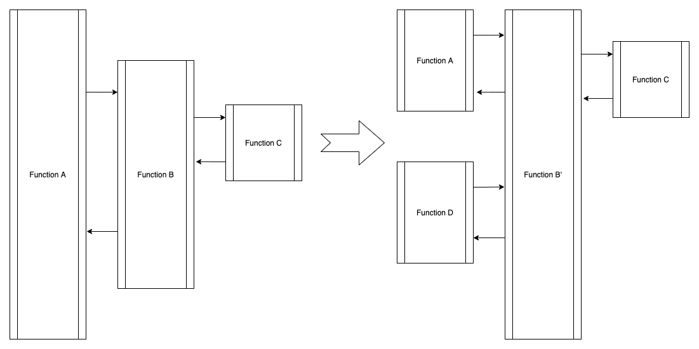

What’re challenges of software development?
About lock
How to change wheels when driving?

What’s function in the developer’s view?
val fx = A => B
or
def fx(par1:Any, par2:Any,...):Any ={
doA(par1)
if(par2){
doB(par2)
}
}
For example:
We need to query price data with business logic which is not confirmed by LoS people:
- GetByEngagementName
-
def getEngagementSecurityPrice() = Action.async(trim(parse.json)) { implicit request => { ... egaRead.lookupByFundEngagementId(fundEngagementId).flatMap { egaOpt => egaOpt.flatMap(_.securityItems).map(str => Json.parse(str).as[EngagementSecurity]).map { engageSecurity => Future(engageSecurity.items.map { securityItem => getSecrurityPrivceOrderd(securityItem.isin,securityItem.currency.getOrElse(""), date, securityItem.catagory, priceAndSource) }.flatten) }.getOrElse(Future(Seq())) } } } - GetBySecuritypriceAndOrder
-
private def getSecrurityPrivceOrderd(isin: String,currency:String, pricedate: String, securityType: String, priceAndSource: PriceAndSource): Seq[SecurityPrice] = { var continueQuery = true val sourceFrom = securityType match { case "Standard" => priceAndSource.standard case "Future" => priceAndSource.future case "Option" => priceAndSource.option case _ => priceAndSource.other } var result: Seq[SecurityPrice] = Seq() val res2 = getByIsinAndDate(isin, currency, pricedate) if(res2.map(_.exchange).toSet.toSeq.length ==1){ result =res2 }else { var priceType = "" var source = "" for (priceType <- priceAndSource.priceOrder) { for (source <- sourceFrom) { if (continueQuery && priceType.length>0 && source.length >0) { val ret = getSecurityPriceByPriceAndOrder(isin, pricedate, priceType, currency,source) if (ret.length > 0) { continueQuery = false result = ret } } } } } result } - QeuryData
-
private def getByIsinAndDate(isin: String,currency:String, pricedate: String) = { val securityPriceQuery = SecurityPriceQuery(None, None, Some(isin), None, None, None, None,Some(currency), pricedate) Await.result(securityPriceRead.query(securityPriceQuery), 1 second) } private def getSecurityPriceByPriceAndOrder(isin: String, pricedate: String, priceType: String, currency:String, source: String): Seq[SecurityPrice] = { val securityPriceQuery = SecurityPriceQuery(None, None, Some(isin), None, Some(priceType), Some(source), None, Some(currency), pricedate) Await.result(securityPriceRead.query(securityPriceQuery), 1 second) } case class SecurityPriceQuery(cname: Option[String], gsp: Option[String], isin: Option[String], assetclass: Option[String], pricetype: Option[String], source: Option[String], exchange: Option[String], currency: Option[String],pricedate: String) - QueryInDatabase
-
override def query(securityPriceQuery: SecurityPriceQuery): Future[Seq[SecurityPrice]] = { val query = Securityprices.filter(securityPrice => securityPriceQuery.cname.map(cname => securityPrice.cname === cname).getOrElse(true: Rep[Boolean])) .filter(securityPrice => securityPriceQuery.gsp.map(gsp => securityPrice.gsp === gsp).getOrElse(true: Rep[Boolean])) .filter(securityPrice => securityPriceQuery.isin.map(isin => securityPrice.isin === isin).getOrElse(true: Rep[Boolean])) .filter(securityPrice => securityPriceQuery.assetclass.map(assetclass => securityPrice.assetclass === assetclass).getOrElse(true: Rep[Boolean])) .filter(securityPrice => securityPriceQuery.pricetype.map(priceType => securityPrice.pricetype like(s"%$priceType%")).getOrElse(true: Rep[Boolean])) .filter(securityPrice => securityPriceQuery.source.map(source => securityPrice.source === source).getOrElse(true: Rep[Boolean])) .filter(securityPrice => securityPriceQuery.exchange.map(exchange => securityPrice.exchange === exchange).getOrElse(true: Rep[Boolean])) .filter(securityPrice => securityPriceQuery.currency.map(currency => securityPrice.currency === currency).getOrElse(true: Rep[Boolean])) .filter(securityPrice => securityPrice.pricedate === securityPriceQuery.pricedate) db.run(query.result).map { maybeRow => maybeRow.map(rowToEntity) } }
0.1.0*